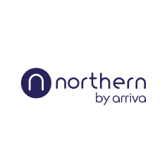
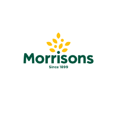
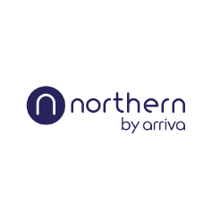
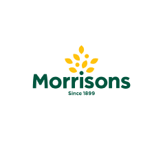

For many organisations, the wireless LAN is just as important as the wired LAN. For factories, warehouses, campuses and retail environment, WiFi is often the only network connectivity option that’s viable. If it’s mission critical, it would benefit from Limino performance engineering.
Our wireless LANs are designed, installed and commissioned entirely by our in-house qualified engineering teams. We spec our solutions to be compatible with 802.11a, 802.11abg, 803.11n, 802.11ac and 802.11ax standards.
We apply our normal best-of-breed approach to WiFi to ensure peak performance. We use AirMagnet Survey and Planning tools, along with equipment from Arista Cognitive, Extreme Networks, Fortinet and Xirrus. Finally, we use point-to-point technologies from Siklu, Ubiquity and Bridgewave.
Our Network Infrastructure Technologies
Express Data’s solutions cover four highly
specialised areas, all underpinned by our
performance-engineered network fabric.
Our integration expertise allows us to bring these
solutions to life, leveraging existing infrastructure
where possible.


 


